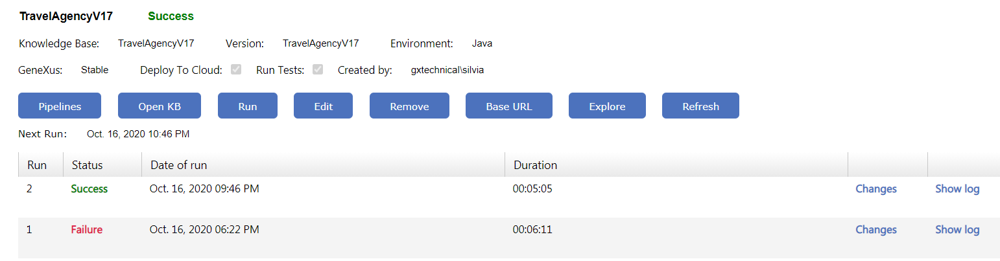
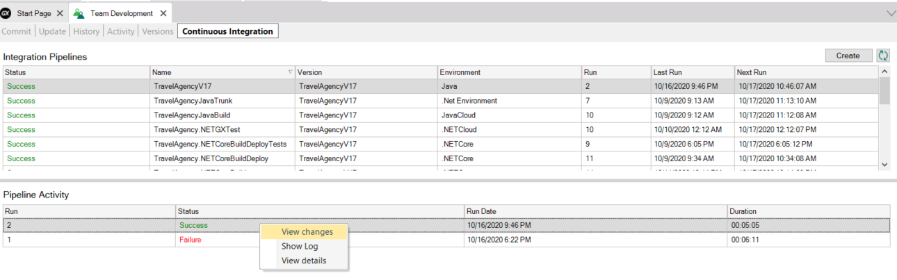

Once a continuous integration pipeline has been created, by clicking on the name you can access the following information:
- Detailed information of that pipeline (KB, Version, Environment, what actions were defined on the pipeline and user who created it)
- The number of times it was executed and the status of each one of them
- Sucess - All the actions of the pipeline were executed correctly
- Failure - Some action failed
- Unstable - Test execution failed.

It is also possible to access the following information:
- Changes: The changes made to the KB since the last execution are shown
- Show log: The complete log of that execution is shown (all the steps that were carried out, according to what was configured in the pipeline (update, build, deploy to cloud, test execution).
The same information can be seen from the GeneXus IDE:

When the pipeline is executed the following actions are executed:
First time
- Create KB from GXserver is executed
- The environment selected in the pipeline definition is configured as active
- The property Deploy to cloud = Yes / No is configured according to what is selected
- If Deploy to cloud was selected = No, the following properties are configured at the generator level:
- Reorganize server tables = No
- Keep GAM database updated=False
- Populate Data=False
- If Deploy to cloud was selected = Yes, the following property is configured at the generator level:
- Build / Rebuild according to what is configured
- Execution of Unit tests
- Execution of UI tests
Note: To modify the default value of the "Populate Data" property for the execution of CI pipelines, please refer to the Section "How to modify the default value of the "Populate Data" property" in the following document: Continuous Integration Under the Hood
The following times
- If the KB does not exist, a Create KB from GXserver is executed again
- If the KB already exists, an Open Knowledge Base is carried out
- An update is made of the changes in GXserver
- The environment selected in the project definition is configured as active
- Build / Rebuild all
- Execution of Unit tests
- Execution of UI tests
|